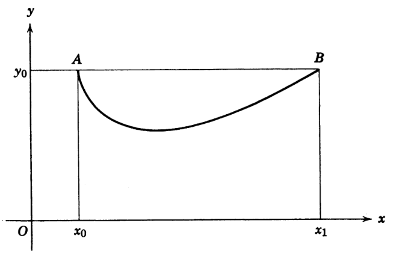
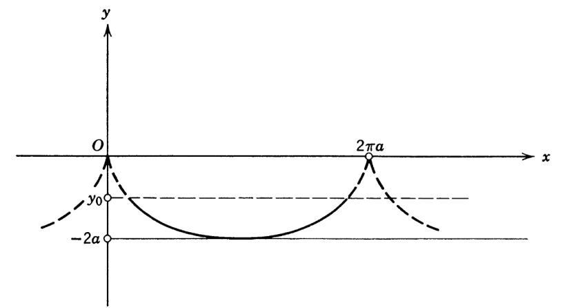

a. 微分方程及其解
现在讨论一般问题：在预先指定的任意力 m f ( s ) mf(s) m f ( s ) s ¨ = f ( s ) \ddot s=f(s) s ¨ = f ( s ) s ( t ) s(t) s ( t ) f ( s ) f(s) f ( s )
原注 1（第 405 页） 原先沿曲线的运动方程为 m s ¨ = f ( s ) m\ddot s=\mathcal f(s) m s ¨ = f ( s ) m f ( s ) mf(s) m f ( s )
取 f ( s ) f(s) f ( s ) F ( s ) F(s) F ( s ) F ′ ( s ) = f ( s ) F'(s)=f(s) F ′ ( s ) = f ( s ) s ¨ = f ( s ) = F ′ ( s ) \ddot s=f(s)=F'(s) s ¨ = f ( s ) = F ′ ( s ) s ˙ \dot s s ˙ d ( s ˙ 2 / 2 ) / d t d(\dot s^2/2)/dt d ( s ˙ 2 /2 ) / d t F ′ ( s ) s ˙ F'(s)\dot s F ′ ( s ) s ˙ s s s t t t F ( s ) F(s) F ( s ) t t t
d d t ( 1 2 s ˙ 2 ) = d d t F ( s ) , 1 2 s ˙ 2 = F ( s ) + c ,
\frac{d}{dt}\left(\tfrac12\dot s^2\right)=\frac{d}{dt}F(s),\qquad
\tfrac12\dot s^2=F(s)+c,
d t d ( 2 1 s ˙ 2 ) = d t d F ( s ) , 2 1 s ˙ 2 = F ( s ) + c , 其中第二式由积分而得，c c c s ( t ) s(t) s ( t ) d s / d t = 2 [ F ( s ) + c ] ds/dt=\sqrt{2[F(s)+c]} d s / d t = 2 [ F ( s ) + c ] s ( t ) s(t) s ( t ) t ( s ) t(s) t ( s ) s s s
d t d s = 1 2 [ F ( s ) + c ] , t = ∫ d s 2 [ F ( s ) + c ] + c 1 ,
\frac{dt}{ds}=\frac1{\sqrt{2[F(s)+c]}},\qquad
t=\int\frac{ds}{\sqrt{2[F(s)+c]}}+c_1,
d s d t = 2 [ F ( s ) + c ] 1 , t = ∫ 2 [ F ( s ) + c ] d s + c 1 , t ( s ) t(s) t ( s ) c 1 c_1 c 1 c , c 1 c,c_1 c , c 1
译者注 这里先写 s ˙ > 0 \dot s>0 s ˙ > 0 s ˙ = 0 \dot s=0 s ˙ = 0 s ˙ \dot s s ˙
仍以先前的弹性振动为例，认 x x x s s s f ( s ) = − ω 2 s f(s)=-\omega^2s f ( s ) = − ω 2 s F ( s ) = − 1 2 ω 2 s 2 F(s)=-\frac12\omega^2s^2 F ( s ) = − 2 1 ω 2 s 2
d t d s = 1 2 c − ω 2 s 2 , t = ∫ d s 2 c − ω 2 s 2 + c 1 .
\frac{dt}{ds}=\frac1{\sqrt{2c-\omega^2s^2}},\qquad
t=\int\frac{ds}{\sqrt{2c-\omega^2s^2}}+c_1.
d s d t = 2 c − ω 2 s 2 1 , t = ∫ 2 c − ω 2 s 2 d s + c 1 . 引入 ω s / 2 c \omega s/\sqrt{2c} ω s / 2 c
t = 1 ω arcsin ω s 2 c + c 1 , s = 2 c ω sin ω ( t − c 1 ) ,
t=\frac1\omega\arcsin\frac{\omega s}{\sqrt{2c}}+c_1,\qquad
s=\frac{\sqrt{2c}}\omega\sin\omega(t-c_1),
t = ω 1 arcsin 2 c ω s + c 1 , s = ω 2 c sin ω ( t − c 1 ) , 这与原来的解完全相同。此例还说明积分常数意味着什么，又怎样确定。譬如要求质点在 t = 0 t=0 t = 0 s = 0 s=0 s = 0 s ˙ ( 0 ) = 1 \dot s(0)=1 s ˙ ( 0 ) = 1 0 = ( 2 c / ω ) sin ω c 1 , 1 = 2 c cos ω c 1 0=(\sqrt{2c}/\omega)\sin\omega c_1,\ 1=\sqrt{2c}\cos\omega c_1 0 = ( 2 c / ω ) sin ω c 1 , 1 = 2 c cos ω c 1 c 1 = 0 , c = 1 / 2 c_1=0,\ c=1/2 c 1 = 0 , c = 1/2 t = 0 t=0 t = 0 s 0 s_0 s 0 s ˙ 0 \dot s_0 s ˙ 0
b. 质点沿曲线下滑
质点受重力而沿光滑无摩擦的曲线下滑，可用上述方法很简单地处理。由第 401 页，运动方程为 s ¨ = − g d y / d s \ddot s=-g\,dy/ds s ¨ = − g d y / d s t t t x , y x,y x , y s s s s s s
同上，将方程两边同乘 s ˙ \dot s s ˙ 1 2 s ˙ 2 \frac12\dot s^2 2 1 s ˙ 2 t t t − g y -gy − g y t t t 1 2 s ˙ 2 = − g y + c \frac12\dot s^2=-gy+c 2 1 s ˙ 2 = − g y + c t = 0 t=0 t = 0 x 0 , y 0 x_0,y_0 x 0 , y 0 s ˙ ( 0 ) = 0 \dot s(0)=0 s ˙ ( 0 ) = 0 − g y 0 + c = 0 -gy_0+c=0 − g y 0 + c = 0
1 2 s ˙ 2 = g ( y 0 − y ) .
\tfrac12\dot s^2=g(y_0-y).
2 1 s ˙ 2 = g ( y 0 − y ) . 因 s ˙ 2 \dot s^2 s ˙ 2 y y y y 0 y_0 y 0 y 0 y_0 y 0 t ( s ) t(s) t ( s )
d t d s = ± 1 2 g ( y 0 − y ) , t = c 1 ± ∫ d s 2 g ( y 0 − y ) ,
\frac{dt}{ds}=\pm\frac1{\sqrt{2g(y_0-y)}},\qquad
t=c_1\pm\int\frac{ds}{\sqrt{2g(y_0-y)}},
d s d t = ± 2 g ( y 0 − y ) 1 , t = c 1 ± ∫ 2 g ( y 0 − y ) d s , 其中 c 1 c_1 c 1 s ˙ \dot s s ˙ y 0 y_0 y 0 s ˙ \dot s s ˙ s ˙ = 0 \dot s=0 s ˙ = 0 y − y 0 = 0 y-y_0=0 y − y 0 = 0 y 0 y_0 y 0
也可用任一参数 θ \theta θ s s s x = φ ( θ ) , y = ψ ( θ ) x=\varphi(\theta),\ y=\psi(\theta) x = φ ( θ ) , y = ψ ( θ ) θ \theta θ
t = c 1 ± ∫ d s d θ d θ 2 g ( y 0 − y ) = c 1 ± ∫ x ′ 2 + y ′ 2 2 g ( y 0 − y ) d θ ,
t=c_1\pm\int\frac{ds}{d\theta}\frac{d\theta}{\sqrt{2g(y_0-y)}}
=c_1\pm\int\sqrt{\frac{x'^2+y'^2}{2g(y_0-y)}}\,d\theta,
t = c 1 ± ∫ d θ d s 2 g ( y 0 − y ) d θ = c 1 ± ∫ 2 g ( y 0 − y ) x ′2 + y ′2 d θ , 其中 x ′ = φ ′ ( θ ) , y ′ = ψ ′ ( θ ) , y = ψ ( θ ) x'=\varphi'(\theta),\ y'=\psi'(\theta),\ y=\psi(\theta) x ′ = φ ′ ( θ ) , y ′ = ψ ′ ( θ ) , y = ψ ( θ ) t = 0 t=0 t = 0 θ 0 \theta_0 θ 0
t = ± ∫ θ 0 θ x ′ 2 + y ′ 2 2 g ( y 0 − y ) d θ . (49)
t=\pm\int_{\theta_0}^{\theta}\sqrt{\frac{x'^2+y'^2}{2g(y_0-y)}}\,d\theta.\tag{49}
t = ± ∫ θ 0 θ 2 g ( y 0 − y ) x ′2 + y ′2 d θ . ( 49 ) 这表示质点从参数 θ 0 \theta_0 θ 0 θ \theta θ t ( θ ) t(\theta) t ( θ ) θ ( t ) \theta(t) θ ( t ) t t t x = φ [ θ ( t ) ] , y = ψ [ θ ( t ) ] x=\varphi[\theta(t)],\ y=\psi[\theta(t)] x = φ [ θ ( t )] , y = ψ [ θ ( t )]
c. 运动情况的讨论
即使积分没有显式的结果，也可由所得方程直观地推知运动的大致情形。设曲线如图 4.45，是一段向下凸出的弧，s s s A A A A A A x 0 = φ ( θ 0 ) , y 0 = ψ ( θ 0 ) x_0=\varphi(\theta_0),\ y_0=\psi(\theta_0) x 0 = φ ( θ 0 ) , y 0 = ψ ( θ 0 ) s ¨ \ddot s s ¨ A A A − g d y / d s -g\,dy/ds − g d y / d s s ˙ 2 = 2 g ( y 0 − y ) \dot s^2=2g(y_0-y) s ˙ 2 = 2 g ( y 0 − y ) A A A B B B A A A ∣ s ˙ ∣ |\dot s| ∣ s ˙ ∣ B B B A A A A A A B B B

图 4.45 质点在等高的 A、B 间振荡 以 T T T A A A B B B T T T θ 0 , θ 1 \theta_0,\theta_1 θ 0 , θ 1 A , B A,B A , B
T 2 = 1 2 g ∣ ∫ θ 0 θ 1 x ′ 2 + y ′ 2 y 0 − y d θ ∣ = 1 2 g ∣ ∫ θ 0 θ 1 φ ′ 2 ( θ ) + ψ ′ 2 ( θ ) ψ ( θ 0 ) − ψ ( θ ) d θ ∣ . (50)
\frac T2=\frac1{\sqrt{2g}}\left|\int_{\theta_0}^{\theta_1}\sqrt{\frac{x'^2+y'^2}{y_0-y}}\,d\theta\right|
=\frac1{\sqrt{2g}}\left|\int_{\theta_0}^{\theta_1}\sqrt{\frac{\varphi'^2(\theta)+\psi'^2(\theta)}{\psi(\theta_0)-\psi(\theta)}}\,d\theta\right|.\tag{50}
2 T = 2 g 1 ∫ θ 0 θ 1 y 0 − y x ′2 + y ′2 d θ = 2 g 1 ∫ θ 0 θ 1 ψ ( θ 0 ) − ψ ( θ ) φ ′2 ( θ ) + ψ ′2 ( θ ) d θ . ( 50 ) 若最低点对应的参数是 θ 2 \theta_2 θ 2 A A A
1 2 g ∣ ∫ θ 0 θ 2 x ′ 2 + y ′ 2 y 0 − y d θ ∣ .
\frac1{\sqrt{2g}}\left|\int_{\theta_0}^{\theta_2}\sqrt{\frac{x'^2+y'^2}{y_0-y}}\,d\theta\right|.
2 g 1 ∫ θ 0 θ 2 y 0 − y x ′2 + y ′2 d θ . d. 普通单摆
最简单的例子是单摆。这时曲线是半径固定为 L L L x = L sin θ , y = − L cos θ x=L\sin\theta,\ y=-L\cos\theta x = L sin θ , y = − L cos θ θ \theta θ
T = 2 L g ∫ − θ 0 θ 0 d θ cos θ − cos θ 0 = L g ∫ − θ 0 θ 0 d θ sin 2 ( θ 0 / 2 ) − sin 2 ( θ / 2 ) .
T=\sqrt{\frac{2L}g}\int_{-\theta_0}^{\theta_0}\frac{d\theta}{\sqrt{\cos\theta-\cos\theta_0}}
=\sqrt{\frac Lg}\int_{-\theta_0}^{\theta_0}
\frac{d\theta}{\sqrt{\sin^2(\theta_0/2)-\sin^2(\theta/2)}}.
T = g 2 L ∫ − θ 0 θ 0 cos θ − cos θ 0 d θ = g L ∫ − θ 0 θ 0 sin 2 ( θ 0 /2 ) − sin 2 ( θ /2 ) d θ . θ 0 \theta_0 θ 0 0 < θ 0 < π 0<\theta_0<\pi 0 < θ 0 < π t = 0 t=0 t = 0
u = sin ( θ / 2 ) sin ( θ 0 / 2 ) , d u d θ = cos ( θ / 2 ) 2 sin ( θ 0 / 2 ) ,
u=\frac{\sin(\theta/2)}{\sin(\theta_0/2)},\qquad
\frac{du}{d\theta}=\frac{\cos(\theta/2)}{2\sin(\theta_0/2)},
u = sin ( θ 0 /2 ) sin ( θ /2 ) , d θ d u = 2 sin ( θ 0 /2 ) cos ( θ /2 ) , 周期可写成
T = 2 L g ∫ − 1 1 d u ( 1 − u 2 ) [ 1 − u 2 sin 2 ( θ 0 / 2 ) ] .
T=2\sqrt{\frac Lg}\int_{-1}^1\frac{du}{\sqrt{(1-u^2)[1-u^2\sin^2(\theta_0/2)]}}.
T = 2 g L ∫ − 1 1 ( 1 − u 2 ) [ 1 − u 2 sin 2 ( θ 0 /2 )] d u . 这样就用椭圆积分表示出了单摆的振动周期（见第 299 页）。
原注 1（第 410 页） 这里假定摆的速度在运动中的某个时刻确实变为零。这排除了单摆连转整圈的运动，在那种运动中 θ \theta θ t t t
若振幅很小，根号下的第二个因子可以足够准确地用 1 1 1 2 L / g ∫ − 1 1 d u / 1 − u 2 2\sqrt{L/g}\int_{-1}^1du/\sqrt{1-u^2} 2 L / g ∫ − 1 1 d u / 1 − u 2 T T T 2 π L / g 2\pi\sqrt{L/g} 2 π L / g θ 0 \theta_0 θ 0 θ 0 \theta_0 θ 0
1 ≥ 1 − u 2 sin 2 θ 0 2 ≥ 1 − sin 2 θ 0 2 = cos 2 θ 0 2 ,
1\ge1-u^2\sin^2\frac{\theta_0}2\ge1-\sin^2\frac{\theta_0}2=\cos^2\frac{\theta_0}2,
1 ≥ 1 − u 2 sin 2 2 θ 0 ≥ 1 − sin 2 2 θ 0 = cos 2 2 θ 0 , 有估计
2 π L g ≤ T ≤ 1 cos ( θ 0 / 2 ) 2 π L g .
2\pi\sqrt{\frac Lg}\le T\le\frac1{\cos(\theta_0/2)}\,2\pi\sqrt{\frac Lg}.
2 π g L ≤ T ≤ cos ( θ 0 /2 ) 1 2 π g L . 若 θ 0 < 10 ∘ \theta_0<10^\circ θ 0 < 1 0 ∘ 1 / cos ( θ 0 / 2 ) ≤ sec 5 ∘ < 1.004 1/\cos(\theta_0/2)\le\sec5^\circ<1.004 1/ cos ( θ 0 /2 ) ≤ sec 5 ∘ < 1.004 2 π L / g 2\pi\sqrt{L/g} 2 π L / g 1 / 2 % 1/2\% 1/2%
e. 摆线摆
普通单摆的周期并非严格地与振幅无关。克里斯蒂安·惠更斯在长期研制精确时钟的过程中，便寻求这样一条曲线 C C C
原注 1（第 411 页） 这种振动称为等时振动 。
要使质点真能在摆线上振动，摆线尖点须指向重力的反方向。所以要把先前讨论的摆线（第 328 页）绕 x x x t t t θ + π \theta+\pi θ + π x = a ( θ + π + sin θ ) , y = − a ( 1 + cos θ ) x=a(\theta+\pi+\sin\theta),\ y=-a(1+\cos\theta) x = a ( θ + π + sin θ ) , y = − a ( 1 + cos θ )

图 4.46 摆线摆的轨迹 质点由高度 y 0 = − a ( 1 + cos θ 0 ) y_0=-a(1+\cos\theta_0) y 0 = − a ( 1 + cos θ 0 ) 0 < θ 0 < π 0<\theta_0<\pi 0 < θ 0 < π y 0 y_0 y 0
T 2 = 1 2 g ∫ − θ 0 θ 0 x ′ 2 + y ′ 2 y 0 − y d θ = 2 a g ∫ − θ 0 θ 0 cos ( θ / 2 ) cos θ − cos θ 0 d θ .
\frac T2=\sqrt{\frac1{2g}}\int_{-\theta_0}^{\theta_0}\sqrt{\frac{x'^2+y'^2}{y_0-y}}\,d\theta
=\sqrt{\frac{2a}g}\int_{-\theta_0}^{\theta_0}\frac{\cos(\theta/2)}{\sqrt{\cos\theta-\cos\theta_0}}\,d\theta.
2 T = 2 g 1 ∫ − θ 0 θ 0 y 0 − y x ′2 + y ′2 d θ = g 2 a ∫ − θ 0 θ 0 cos θ − cos θ 0 cos ( θ /2 ) d θ . 用求单摆周期时的同一代换，即得
T 2 = 2 a g ∫ − 1 1 d u 1 − u 2 , T = 4 π a g .
\frac T2=2\sqrt{\frac ag}\int_{-1}^1\frac{du}{\sqrt{1-u^2}},\qquad T=4\pi\sqrt{\frac ag}.
2 T = 2 g a ∫ − 1 1 1 − u 2 d u , T = 4 π g a . 因此振动周期 T T T θ 0 \theta_0 θ 0